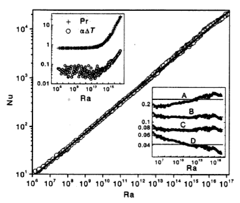
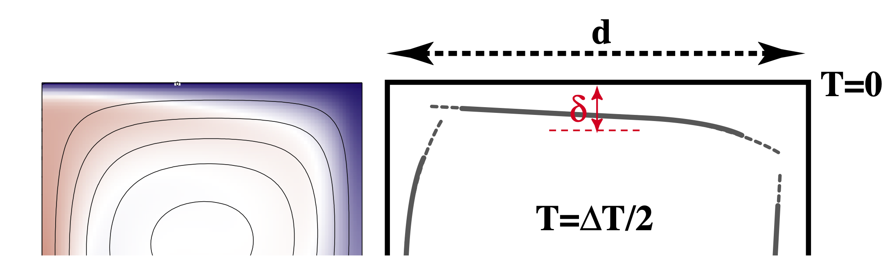
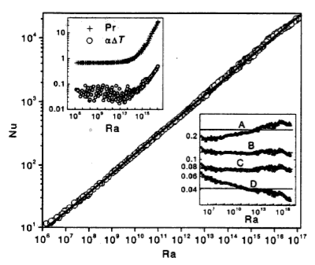
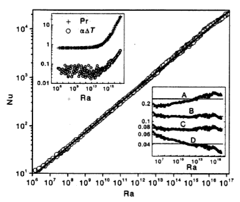

In which we concern ourselves with the observation of signals from the convecting mantle at the surface of the Earth and, perhaps, of the other terrestrial planets. We will see how mantle convection naturally produces the pattern of heat flow in the oceans that we discussed in earlier lectures.
<–o–>
Observables
Quantitative information we can obtain about the dynamics of planetary interiors from remote sensing.
Which remote observations tell us what information ?
Gravity measurements: density distribution
Surface topography: surface stress field
Surface heat flow: near surface temperature gradients
Seismology: elastic wave speed distribution
Morphology: deformation styles / relative ages
E/M: conductivity / magnetic susceptibility
None of these tells us directly what the flow is doing at depth —how to solve this and the uncertainty of rheological parameters.
<–o–>
Oceans v. Continents v. Boundary Layers
The ocean basins have a systematic variation in heat flow and thickness from mid ocean ridge to trench that we can interpret in terms of the cooling boundary layer model. The continents do not fit that model at all because they are not part of the global 3D circulation.
<–o–>
Recap from previous lecture
We assume the geometry of fully developed convection is as follows - Thin horizontal boundary layers where heat diffuses into the layer and is carried away by horizontal advection. - These are connected by vertical boundary layers of similar dimension. - Approximately isothermal core, passively rotating, driven by the boundary layers.
Making all of these assumptions allows us to derive the relationships:
We saw that the we could predict the global heat flow by understanding the basic fluid dynamics of the convecting mantle. How can we verify if our theoretical picture has anything to do with the real Earth ?

We might try to look at the global heat flow to see if the numbers match, but, if we want to identify the convection patterns as well, we might need to look at variations in the heat flow.(e.g. can we see cold and hot regions ?). The problem is …
<–o–>
Global Heat Flow
Raw data compiled by Davies & Davies 2013. There are really not very many reliable measurements.
<–o–>
Boundary Layer Theory

We can look a little bit harder at the convection model we have been using and try to take it one step further.
Consider what actually happens as the hot material arrives at the surface (on the left) and spreads out horizontally (to the right). It begins to cool off as it moves. Because the horizontal length scale of the boundary layer is larger than the vertical scale, this is almost like a 1d problem.
<–o–>
Boundary Layers and the Cooling 1/2 Space
Time and space are not independent in a moving-plate model. If you know the age of the plate and the plate velocity, you also know how far from the ridge you are.
So we can imagine standing on the plate and measuring the geotherm. From this perspective, the plate looks flat and the geotherm is the same all around us. We can model this as a cooling “half-space”
<–o–>
Cooling lithosphere = Error Function
Any point riding along with the plate sees a 1D cooling pattern underneath associated with the aging of the plate. This is a good approximation because lateral heat flow is small (small temperature gradients)
<–v–>
Cooling lithosphere = Error Function
If we take a uniformly hot region and suddenly cool the boundary, the equation for the temperature as a function of time and space is:
What is the erf ? - It comes from probability theory and describes the probability of a value in a gaussian distribution having a value between -x and x. It might be hard to calculate, but it is easy enough to differentiate:
\[\textrm{erf}(x) = \int_{-x}^{x} e^{-t^2} dt \]
See https://en.wikipedia.org/wiki/Error_function for a discussion.
<–o–>
Cooling Lithosphere: structure
Lithosphere / boundary layer thickness — pick an isotherm and follow it from ridge to trench. Thickness \(\delta\) changes systematically:
This predicts the thickness of the thermal boundary layer which can be measured by seismology. NB: the thermal boundary layer is a fuzzy thing without a sharp boundary - seismic methods are not always good at determining this kind of structure.
<–v–>
Observations - Ocean Lithosphere Thickness
Modern data from the Litho 1.0 global lithosphere model. We can see that there is a signal in the oceans but still this model only sees at a resolution of 1 degree (about 100km).
Colour scale 5km (red); >200km (blue)
<–o–>
Observations - Oceanic Heat Flow
We can differentiate the cooling half-space model to give the temperature gradient at the surface, and hence the heat flux.
The oceanic heat flux is hard to measure at very young ages, but heat flux agrees quite well (at least until about 80-100 Myr)
That is still not a very large number of data points !
Is there a way to turn our boundary layer prediction into a measurement that we can make easily / everywhere ?
Hint: YES (but it may take a little work)
<–v–>
Observations - Oceanic Heat Flow
Global heat flow estimate by Davies & Davies 2013 which includes various geological assumptions for different types of heat flow province. **These are not raw / independent data because they use models to interpolate where data are scarce.
<–o–>
Predictions of the Cooling model
The strength, density plot oceanic lithosphere at 80Myr
<–v–>
Predictions of the Cooling model
The strength, density plot oceanic lithosphere at 120Myr. (Thicker, denser, stronger)
<–o–>
Global Gravity Anomalies
Can we see these density anomalies in the Earth’s gravity field ?
WGM2012 — Bonvalot, S., Balmino, G., Briais, A., M. Kuhn, Peyrefitte, A., Vales N., Biancale, R., Gabalda, G., Reinquin, F., Sarrailh, M., 2012. World Gravity Map. Commission for the Geological Map of the World. Eds. BGI-CGMW-CNES-IRD, Paris
<–o–>
Isostasy and Ocean Depth
We have trouble identifying mass variations for the Earth because of Isostasy which is the phenomenon in which topography and density are causally correlated.
The lack of gravity (anomaly) signature associated with continental topography on Earth is explained simply by ISOSTASY — wherever there is a topographic high, there is a corresponding crustal root which produces a gravitational dipole.
<–v–>
Isostasy and Ocean Depth
If the density varies in a predictable way, then we should be able to see this in an isostatic change in the topography.
\[ \int_0^{d_c} \rho(z) dz = \textrm{constant} \]
Although we usually think about isostasy as the light crust floating on the mantle, the same approach works for any density variations near the surface (e.g. thermal anomalies). If we integrate every density anomaly in adjacent columns, they balance out in the asthenosphere. This is the Pratt model of isostasy.
<–o–>
Isostasy and Cooling
Isostasy means that density variations are visible in the Earth’s topography. This is a good thing for us because topography (bathymetry) is much easier to measure than the other observables.
Suppose we know how to integrate the Half-Space Cooling equations, then we can compute the water depth as a function of lithospheric age and make a testable prediction
The first-order indication of mantle convection is actually the thermal structure of the (oceanic plates) which are thermal boundary layers.
Heat flow data are very noisy and sparse but the thermal structure implies density variations and these can be imaged seismically and also through their buoyancy.
Sea floor topography (bathymetry) is related to buoyancy and hence thermal structure. Boundary layer theory says the sea floor should subside as the square root of its age.
<–o–>
Accompanying Lab
In the lab this week, we will use the available data to make an up to date version of this graph and someof the other maps from this lecture.
<–o–>
Advertisement
If this section of the course has grabbed your attention, consider the Geodynamics course in 3rd year, and the Global Tectonics & Structure class.


 
